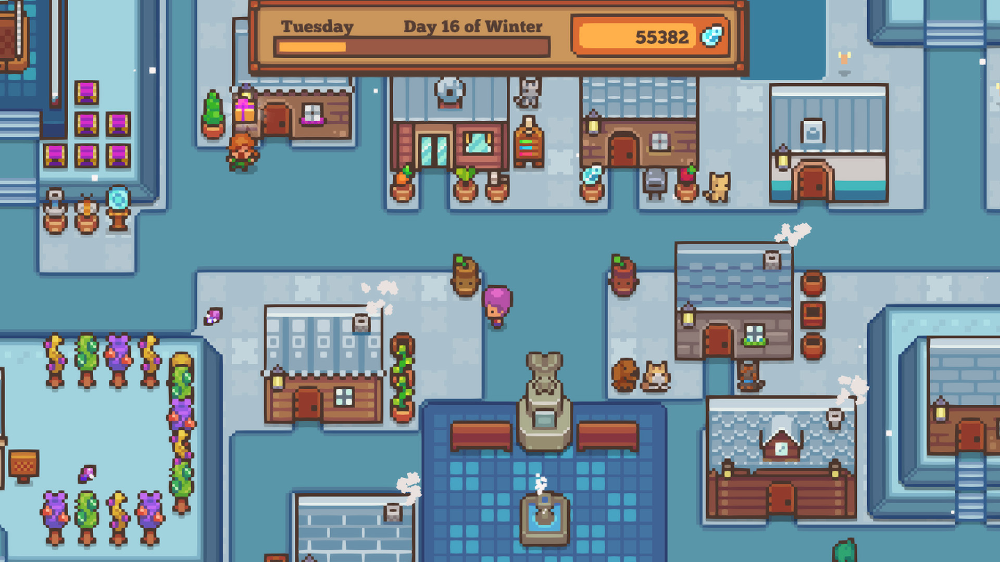
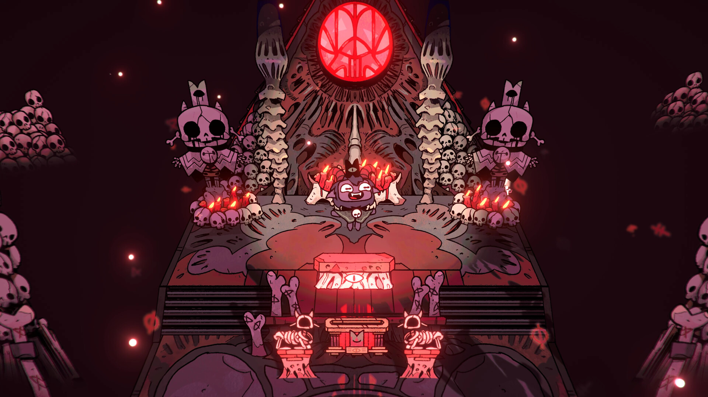

REVIEW · 2016Stardew Valley
REVIEW · 2016Stardew ValleyStardew Valley: A Little Place to Call Home
A warm escape filled with quiet routines, memorable characters, and discoveries that keep the valley feeling alive.
The archive · 001—∞
Reviews, field notes, and recommendations from the edges of the indie scene.
Browse the archive
04 ENTRIES · THE ARCHIVE
REVIEW · 2016Stardew ValleyA warm escape filled with quiet routines, memorable characters, and discoveries that keep the valley feeling alive.

REVIEW · 2020LittlewoodA peaceful post-adventure town builder with a lovely premise, flexible building, and cozy daily rhythms.
 REVIEW · 2024The Planet Crafter
REVIEW · 2024The Planet CrafterA slow-burn survival adventure where every machine helps turn a lifeless planet into a home.

REVIEW · 2022Cult of the LambA distinctively cute and creepy mash-up of dungeon crawling and settlement management.
Got a game in mind?